Responding to alarms in DeltaV Operate
The DeltaV System provides both audible and visible indications when a module (or fieldbus device) goes into an alarm condition. Depending upon the severity of the problem, you might hear an alarm horn (audible indication) or see visual alarm information on the Alarm Banner or on graphical displays such as the module faceplate, detail display, and the alarm list picture. These audible and visual cues persist until you respond to them.
To respond to a single alarm parameter:
Select the alarm parameter data link.
Click the Acknowledge Alarm button. (See the alarm buttons below for more information.)
To acknowledge all alarm parameters on the picture in the main window, click the Acknowledge Alarm button in the Alarm Banner.
If a fieldbus device has an active alarm and you must delete or decommission the device, download the device port before deleting or decommissioning the device. If you do not download the port first, the alarm remains after the device has been deleted or decommissioned.
Alarm Buttons
DeltaV Operate includes the following standard buttons related to alarms. These buttons may appear on more than one type of display and in the DeltaV Operate standard toolbar.
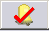
For example, module LIC-XYZ has two active alarms, HI and LO, but only HI is included in the primary control display for the module. If LO is one of the highest priority alarms in the Alarm Banner, clicking the button for the LO alarm in the banner opens the primary control display for LIC-XYZ. However, note that when you click the Acknowledge Alarm button in the Alarm Banner, LO is not acknowledged because it is not part of the primary graphic for the module.
When you select this icon in a faceplate or detail display for a standard module, the system acknowledges all of the unacknowledged alarms for the module even if they are not included in the display.
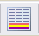
 Alarm List - This button appears in the toolbar window at the
top of the Operate desktop. Clicking this button displays a list of all the
active alarms the current workstation is monitoring for the current user.
Alarm List - This button appears in the toolbar window at the
top of the Operate desktop. Clicking this button displays a list of all the
active alarms the current workstation is monitoring for the current user.
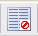
You can unsuppress alarms (unshelve or restore to service) from the Operator Suppressed Alarm picture as needed. However, when you unsuppress an alarm, that alarm is no longer accessible from the Operator Suppressed Alarm picture. If you want to suppress that alarm again, you must return either to the display or to wherever you originally suppressed that alarm.
Diagnostics - This button is displayed in the Alarm Banner and shows the Communications Integrity status. The two indicators in the top row indicate the primary network integrity. The two indicators in the second row indicate the secondary network integrity. The indicator color means:
Green - Good
Red - Bad
Blank - Not configured
Overall Communication Link Integrity (OLInteg) is Bad when all connections to this node are Bad. Overall Communication Connections Integrity is Bad if any connection is Bad. Clicking the Diagnostics button launches diagnostics, which provides more detailed information.
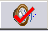
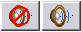
AREA_A must be assigned to the Alarms and Events subsystem of the workstation or remote client session for the Silence Horn and Disable/Enable Horn buttons to function. Only then can a user with sufficient privilege silence or disable the horn.
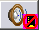
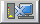
Batch Alarms - This button is displayed in the Alarm Banner. Clicking this button displays a list of all the active Batch alarms the current workstation is monitoring for the current user.
Batch Prompts - This button is displayed in the Alarm Banner. Clicking this button displays a list of batch runtime prompts.
Absolute and Deviation Alarms
There are two different types of alarms for analog values: absolute and deviation alarms.
Absolute Alarms
An absolute alarm monitors a particular parameter (typically the PV) to determine if it exceeds a specific value known as the "trip point." The trip point is the monitored value at which the alarm becomes active. In DeltaV, absolute alarms can be configured as low low, low, high, and high high. For low low and low alarms, the alarm trips or becomes active when the monitored value is less than the alarm trip point. Similarly, for high and high high alarms, the alarm becomes active when the monitored value is greater than the alarm trip point.
Deviation Alarms
A deviation alarm becomes active (is tripped) when the value of the difference between the monitored value and the setpoint or reference value exceeds the value of the deviation alarm trip point. When the difference is greater than the trip point, the alarm is a deviation high alarm. When the difference is less than the trip point, the alarm is a deviation low alarm.
Alarm Priorities
Each alarm has a priority assigned to it. There are three alarm priorities (CRITICAL, WARNING, and ADVISORY) and a special LOG event that is recorded in the Event Chronicle but does not show up on the Alarm Banner, Alarm List, or the graphical displays. The priority determines the color of the alarm on the Alarm Banner, faceplate and detail display, and the Alarm List picture. Note that the default alarm colors may have been changed by the configuration engineers.
The engineer who configures the alarm determines if a horn sound is associated with a CRITICAL, WARNING, and ADVISORY alarm and the type of sound. For example, a beep and a buzz-type sound are typical horn sounds. There is no horn sound for a LOG event.
The Alarm Banner
Alarms are most visible on the Alarm Banner that appears at the bottom of the Operate desktop.

Alarms are shown in the alarm banner in priority order, with the most recent, highest priority alarm on the left. The Alarm Banner is reserved for the highest priority alarms. The importance of an alarm is determined by the following criteria:
Unacknowledged alarms are more important than acknowledged alarms.
For alarms with equal acknowledgment status, the priority (CRITICAL, WARNING, and ADVISORY) determines the importance. CRITICAL is the most important and ADVISORY is the least important.
For alarms with equal acknowledgment status and equal status, the controller uses the timestamp to determine the importance. The most recent alarms are the most important.
The horn is not sounded if a low priority alarm is not eligible to be shown on the alarm banner. The eligibility is determined by defining the alarm threshold initialization (gn_ProcessAlarmThreshold) in the UserSettings picture. For more information, refer to The User_Ref and UserSettings Pictures.
Highest Priority Alarm Buttons
The large buttons notify you of the highest priority alarms that have been activated. The name of the control module whose associated alarm has been tripped appears on the button. Click the alarm button to open the associated faceplate and primary control display for that alarm. (It is possible that the engineer did not configure a primary control display for the alarm and you will receive a message indicating that no primary control picture has been configured.) The two buttons on the Alarm Banner tell you if the faceplate or primary control graphic has been disabled for the alarm. Both of these displays cannot be disabled at the same time.
Extended Information Button
Click the I button to the right of each alarm to see more detailed information about that alarm. Information such as the time the alarm occurred, the module description, the alarm parameter, and the alarm priority appear in this extended information line that runs across the bottom of the screen.
Acknowledge All Button
The Acknowledge All button on the Alarm Banner acknowledges all the alarms in the main window. There is an Acknowledge All button on the faceplate that acknowledges all the alarms for that point only.
Alarms on Faceplates and Detail Displays
Graphical displays such as faceplates and detail displays are customizable and can differ from one plant to another. However, the alarm colors described in Alarm Priorities hold true for most graphical displays and, typically, alarm values blink when they are not acknowledged. The following sections describe the alarm information on module faceplates and detail displays.
There are several ways to open graphical displays such as faceplate and detail displays for a module.


There are some clear differences in how alarms are presented on analog module faceplates and discrete module faceplates.
Analog Module Faceplates
Here is a sample analog module faceplate:
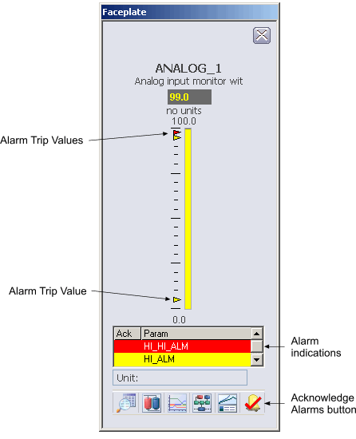
Alarm indications
This is a scrollable list of the current alarms that functions like the first two columns of an alarm summary. The first column shows the state of the alarm represented by one of the following symbols:
Active/unacked -- blank field
Active/acked -- checkmark
Inactive/unacked -- empty box
The second column is the alarm name or parameter. The text and colors are as configured for the alarm's current state.
Acknowledge This Point Only Button
Click the rightmost button on the faceplate to acknowledge all the alarms for this point only. (Remember that on the Alarm Banner this button acknowledges all alarms in the main picture.) The alarm stops blinking when it is acknowledged.
Alarm Trip Value
The alarm trip value or point appears as a small arrowhead in the color of the alarm priority. The arrowhead points to the alarm trip value on the PV (Process Variable) bar graph. For high alarms, a PV above the trip value activates the alarm; for low alarms, a PV below the trip value activates the alarm.
Discrete Module Faceplates
Here is a sample discrete module faceplate.
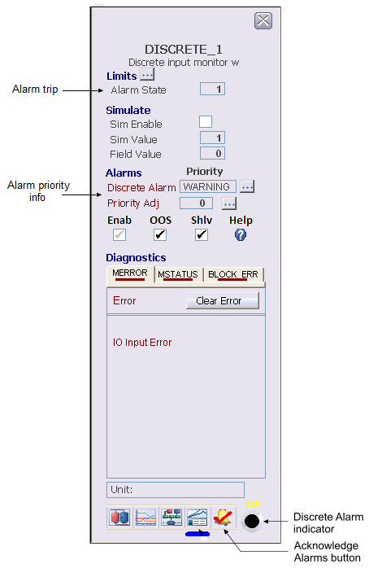
A discrete module faceplate can have only one alarm indicator, labeled DA for discrete alarm. Discrete modules have no associated detail display; the parameters typically found on a detail display are included on the module.
Device Alarm Faceplates
Fieldbus devices that support PlantWeb alerts have a faceplate that enables the user to suppress the alarms for the device and set the priority for each alarm. Suppressing Device Alarms later in this topic, provides more information.
Asset Optimization Alarm Faceplates
External mechanical assets and optimization assets that support PlantWeb alerts have a faceplate that enables the user to suppress the alarms for the asset. Suppressing External Asset Optimization Alarms later in this topic, provides more information.
Analog Module Detail Displays
Here is a sample detail display for an analog module.
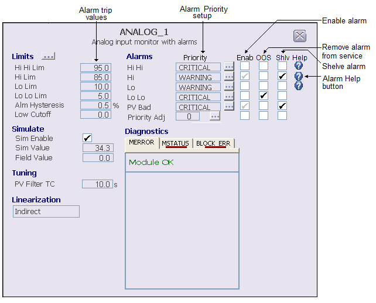
The detail display for an analog module shows the actual alarm trip values as well as their priority assignment. Operators with proper privileges can modify the trip value and modify or adjust the priorities.
The Alarm List Picture
The Alarm List Picture displays up to 1500 active alarms in areas
within the operator's span of control. Use this picture to view and acknowledge
active alarms.
You can open the Alarm List picture from the DeltaV Operate toolbar and from the Alarm Filter picture.
To open the Alarm List picture from the DeltaV Operate toolbar,
click
or click
 and then select the Alarm
List picture (AlarmList).
and then select the Alarm
List picture (AlarmList).
You can acknowledge an alarm by clicking the Ack column for the alarm. You can open the Direct Access picture by clicking on the Description column. For other alarm operations, select an alarm from the list and then use the buttons and context menu on the Alarm List picture to work with the selected alarm. The Alarm List picture uses the Alarm Summary Object to display the alarms. The functions available on the Alarm List picture are described in the DeltaV Operate online help.
Open the Area Select picture (click the Browse button
 ) to select the area for
which you want to see active alarms.
) to select the area for
which you want to see active alarms.

This picture shows the total number of active alarms (Total:), unacknowledged alarms (Unack:) and suppressed alarms (either shelved, out of service or both) for the current area, and lists active alarms by:
Ack - the acknowledged status.
Time In - the time at which the alarm went active.
Time Last - the time of the last state change.
If an alarm is active, unacknowledged or suppressed when a controller switchover occurs, the alarm is regenerated with a new Time Last value. The value of Time In is maintained.
Unit - the name of the unit or equipment module that owns the alarm or is in alarm.
Module/Parameter - the name of the module that contains the alarm and the active alarm.
Description - a description of the module.
Alarm - an abbreviation or acronym such as COS (Change of State) or CFN (Change from Normal) that appears when the alarm is active. The alarm word is a characteristic of the alarm type.
Message - a message associated with the alarm. The format of the alarm message is determined by the alarm type.
Priority - a word, such as Critical, Warning, Advisory, or any user-configured priority that indicates the importance of an event to the operator and the priority of the alarm at the workstation. The priority affects the order in which the alarm appears in this picture and in the Alarm Banner.
Suppressing Alarms
Generally you respond immediately to alarms. However, occasionally you might find that you are distracted by a nuisance alarm that you cannot immediately respond to. When this occurs, you can temporarily shelve the alarm or permanently remove it from service.
Removing an alarm from service falls under the control of maintenance and is used for the purpose of test or repair activities. An out of service alarm remains out of service until it is manually restored to service. In other words, there is no suppression timer.
In the default DeltaV configuration, the user must have the Restricted Control key (assigned in the DeltaV User Manager) to suppress process alarms.
The procedure for suppressing alarms depends on what type of alarm it is (process alarm, a device alarm, external asset optimization alarm).
Suppressing Process Alarms
Use the module's detail picture to suppress the alarm (either shelve it or remove it from service).
To suppress an alarm:
Select the alarm parameter data link.
In the Alarms area next to the alarm you want to suppress, check Shlv to shelve the alarm or OOS to remove it from service.
In this image, a Hi alarm with a priority of WARNING is shelved. A Lo Lo alarm with a priority of CRITICAL is removed from service.
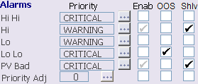
The suppressed alarm is removed from the Alarm Banner and Alarm List pictures and appears on the Alarm Suppress (AlmSupp) picture.
To unsuppress an alarm (either unshelve it or restore it to service), clear the check mark on the detail display or open the Alarm Suppress picture and clear the suppressed alarm.
Suppressing Device Alarms
For devices that support PlantWeb alerts, each alarm (COMM_ALM, FAILED_ALM, MAINT_ALM, and ADVISE_ALM) may be activated by more than one condition, depending on the device. The DeltaV system enables you to suppress device alarms in two ways:
by suppressing the alarm through the device alarm faceplate
by suppressing the conditions that can produce alarms
The suppression of alarm conditions is a device-level setting which you select from the Status/Conditions dialog. This type of suppression prevents the device from reporting the associated alarm condition to the DeltaV system. Suppression of alarms from the faceplate is a user-interface setting that prevents reported alarm conditions from appearing in the alarm banner and alarm list.
Because alarms contain multiple conditions, suppressions at the alarm level will always override suppressions at the condition level.
The following is an example of how alarm or condition suppression might be used.
A fieldbus device reports that it is due to be calibrated. The calibration due condition appears as a Maintenance alarm in the Conditions dialog, and also in the DeltaV alarm banner and Event Chronicle. Because regular service is scheduled for the following week, the user might choose to suppress all Maintenance alarms from that device using the device faceplate. The alarm clears from the alarm banner and the Event Chronicle records that the alarm was suppressed. The device does not generate a maintenance alarm until the alarm is unsuppressed.
Alternatively, the user could choose to suppress only the calibration due condition by checking the box above the condition in the Conditions dialog for that device. If this was the only condition that caused the maintenance alarm, the alarm will clear from the alarm banner and the Event Chronicle. However, if another condition in the maintenance alarm activates, a new maintenance alarm is generated. The device will not generate a maintenance alarm because of the calibration due condition until the condition is unsuppressed.
In both cases, the Status/Conditions dialog continues to display the condition as active.
Suppressing Device Alarms Through the Faceplate
The following image is a typical device alarm faceplate. The faceplate enables you to suppress and unsuppress each alarm for the device individually. In the default DeltaV configuration, the user must have the Restricted Control key to suppress device alarms.

Device Alarms
Lists the device alarms. Each alarm may be caused by several device conditions. A check mark indicates that the alarm has been acknowledged. Note that the engineers who configured the system may have configured some alarms as automatically acknowledged.
Suppressed Alarms
Lists the suppressed alarms. Suppressing an alarm prevents activation of the alarm for all related device conditions. You can suppress acknowledged alarms as long as they are active. When you unsuppress an alarm, it is automatically acknowledged.
Suppressing Device Conditions
You can view and suppress individual conditions at the device level for devices that support PlantWeb alerts. To view and suppress these conditions, click the detail button on the faceplate. Or, select the device in DeltaV Explorer and right-click Status/Conditions. In the default DeltaV configuration, the user must have the Can Calibrate key (assigned in the DeltaV User Manager application) to suppress device conditions.
Suppressing External Asset Optimization Alarms
External Asset Optimization alarms can be suppressed through the Asset Alarm faceplate. The following image is a typical Asset Alarm Faceplate. With the exception of two items (DeltaV description and Asset name on server) this faceplate is identical to the Device Alarm Faceplate. The faceplate enables you to suppress and unsuppress each alarm. In the default DeltaV configuration, the user must have the Restricted Control key to suppress device alarms.

The Alarm Suppress Picture
The Alarm Suppress picture displays up to 1500 suppressed alarms in areas within the current user's span of control. Use this picture to view suppressed alarms (both shelved and out of service) and to unsuppress alarms (unshelve and restore to service).
Downloading a controller will clear from the Alarm Suppress picture any alarms that were generated from that controller. Those alarms will reappear in the Alarm List as Active/Unacknowledged Alarms with a newer timestamp.
Open the Alarm Suppress picture using either of the following ways:
Suppressed alarms are listed by Module, Parameter, Description, Area, Unit and Time In. To unsuppress an alarm, select the alarm and click the unsuppress button from the details toolbar.
You cannot use this picture to suppress an alarm. Use the Detail picture for the module that is in alarm to suppress the alarm. For more information on suppressing alarms, refer to Suppressing Alarms, earlier in this topic
From the Alarm Suppress picture, click to open the Area Select picture. Use the Area Select picture to select the area(s) from which you want to see suppressed alarms.
Filtering Alarms by Area
Use the Alarm Filter button (displayed on the Alarm List picture and the Alarm Suppress picture) to open the Area Alarm Filtering picture. The Area Alarm Filtering (AlarmFilter) picture enables you to turn on the areas from which you want to see alarms and to turn off the areas from which you do not want to see alarms. Filtering includes local and remote zone areas. An area that has been turned off is filtered.
The picture displays up to 250 areas under several tabs. The order is determined by the area sequence number. You can change the sequence number for an area in DeltaV Explorer using the Area Properties dialog for a specific area. Or, you can assign sequences for all areas using the Area Sequence Properties dialog.
Use the Alarm Filter picture to filter alarms in your DeltaV system by the following steps:
Check the box next to an area to display that area's alarms in the Alarm Banner, the Alarm List picture, the Alarm Suppress picture.
Clear the check box to filter alarms by preventing that area's alarms from displaying in the Alarm Banner, the Alarm List, the Alarm Suppress, and the Alarm Filter pictures.
Click the All On button to see alarms from all areas that can be turned on. Click the All Off button to filter (that is, to prevent from displaying) alarms from all areas.
Click an alarm area to see detailed information (for example, time of alarm, module, description, parameter, alarm description, and message) on the alarms for that area.
Click the Description column in the detailed information area to open the Faceplate picture, the Primary Control picture, or both pictures for that module. This is known as Alarm Direct Access. Two buttons in the Alarm Banner enable and disable Alarm Direct Access.
The total count of unacknowledged alarms, active alarms, and suppressed alarms for an area that is checked is displayed next to the plant area name. The total number of alarms, the number of unacknowledged alarms, and the number of suppressed alarms are shown across the top of the area alarm details section.
Whenever an area is being filtered or an alarm is being suppressed, an indicator appears on the Alarm Acknowledge button on the Alarm Banner, as shown in the following table.
Alarm filtering only affects what is seen through DeltaV Operate. It does not affect the Event Chronicle or the association between workstations, users, and alarms that is defined in the DeltaV Explorer or the area keys assigned in User Manager.
Alarm filtering affects only the machine on which the filter settings were made and is independent of the user. If you filter alarms and then log off the machine, the next user to log on will not see alarms from the areas that you filtered.
Saving Runtime Alarm Information
Use the Export Alarm Summary to Xml button (displayed on the Alarm Summary control toolbar) to save a complete list of alarms that meet the criteria of a particular alarm summary. The alarm summary itself is limited to 1500 alarms. The alarm export saves the information for all relevant alarms currently reporting to the workstation. The button is included on all standard alarm displays.
The export button provides a quick and easy way to generate a list of standing alarms based on the filter settings of an alarm summary. This can be used for shift reports or for identifying potential alarm issues that require attention. The alarm summary filters can be preconfigured in a display or modified at runtime by the Operator. The export can be focused by Unit or be a general list of all alarms reporting to that workstation.
Alarm Summary controls placed in operator displays can be configured to include the Export Alarm Summary to Xml button. The operation of the button on these controls is the same as explained here.
Clicking the button starts the export and passes the alarm summary's filter settings to the utility. A status box confirms the export is in progress and remains on the screen for a maximum of 10 seconds. The status box does not interrupt operation and you can click the Hide button to remove the popup immediately without affecting the alarm export.
When the button in an alarm list is clicked, all alarms that satisfy the summary's filter settings are exported to an xml file in the directory \DeltaV\DVData\AlmSummary_export. The information exported is limited by the filters currently in effect for the alarm summary.
The export xml files are given unique names in the form workstation_name_YYYY-MM-DD-timestamp.xml. For example, an export created on workstation OPER_A might be named OPER_A_2008-05-06-133457.xml. A maximum of 50 automatically-named export files are kept on disk. The oldest export files are removed as new exports are made. To save export files indefinitely, either rename them or move them to another directory.
To view and work with the exported files, you can open them in Microsoft Excel. The appearance of the export file when opened in Excel is similar to the Alarm Summary list in the DeltaV software.
Alarm Mosaic application
Alarm Mosaic is a real-time alarm-monitoring display that provides operators with a way to identify problems in the running process control system, giving them time to take corrective actions. The alarms displayed in the application are the same as the alarms displayed in the DeltaV Operate Alarm Banner and are represented as icons. A maximum of 500 alarms can be displayed on the timeline at one time. The alarms are presented both graphically and in list form.